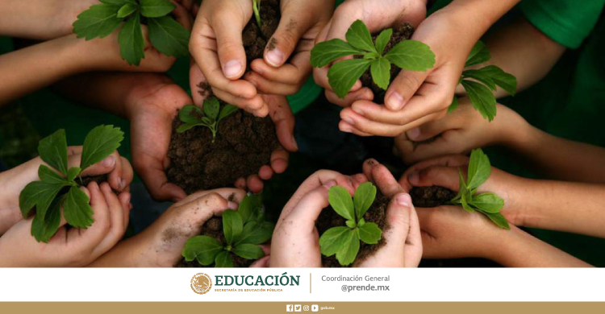

| Características del medio ambiente |
- Es estudiado por la ecología
- Las especies que forman parte zde un ecosistema dependen unas de otras
- los árboles cumplen funciones vitales
- Los recursos naturales forman parte del medio ambiente
|
|
| Contaminación del medio ambiente |
- Destrucción de los bosques
- Contaminación del agua
- Explotación de los recursos naturales
- Contaminación del aire
|
 |
| ¿Cómo cuidar el medio ambiente? |
- Utilizar de manera consciente el agua
- No arrojar residuos a la vía pública
- Reducir el uso de envoltorios plásticos
- Utilizar una bolsa de tela para las compras
|
 |